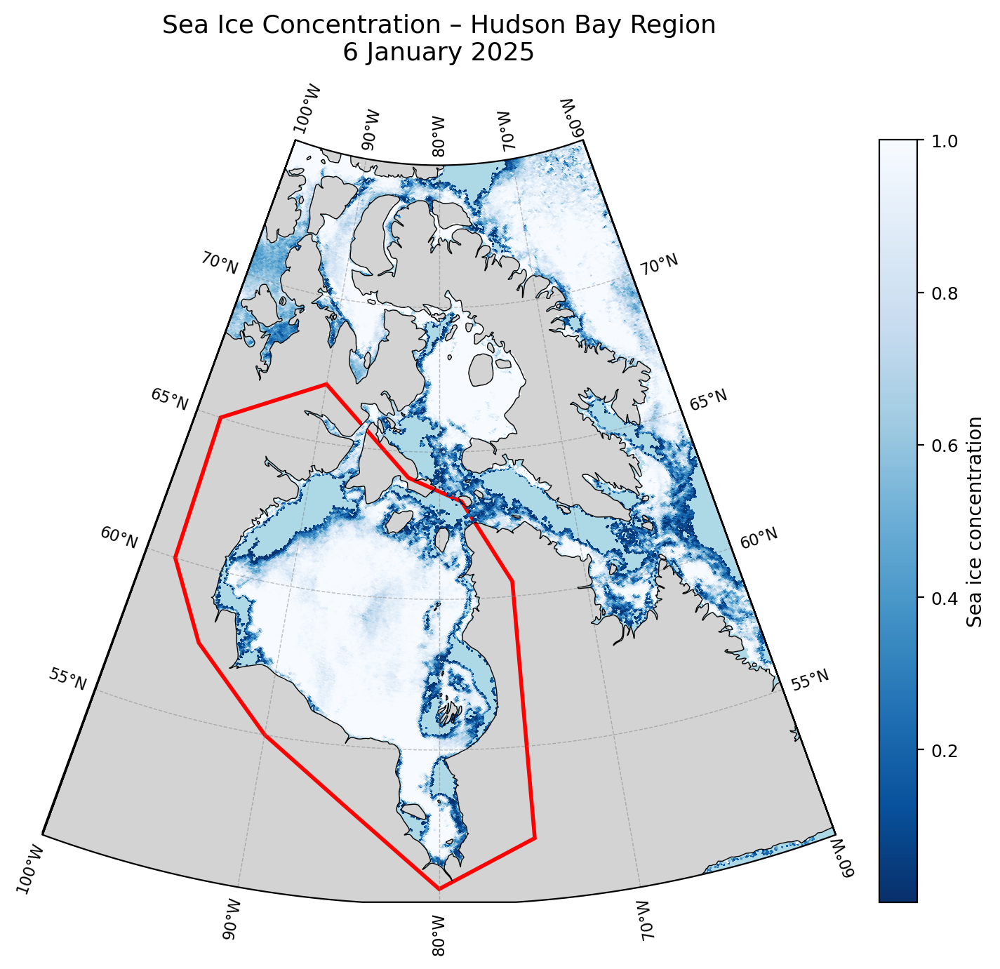
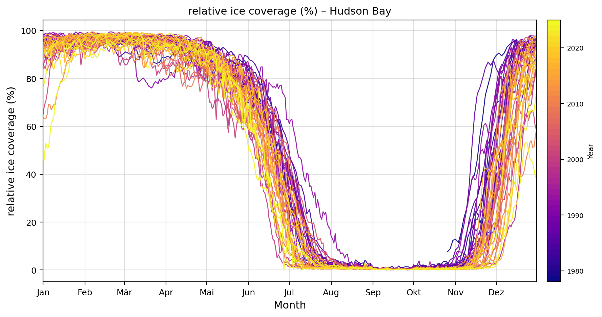
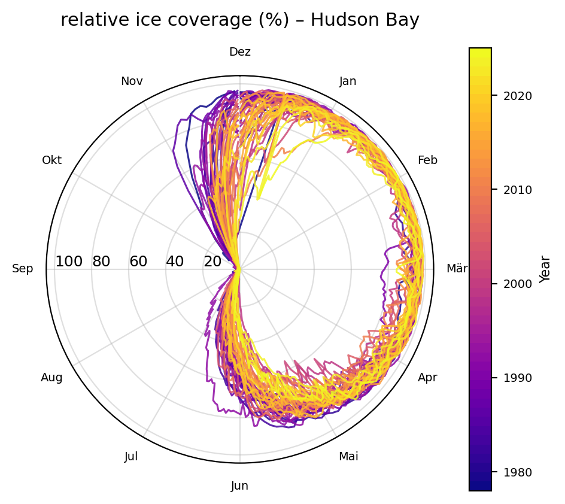

Scientific Context
Sea ice coverage is a key indicator of climate change in polar regions. The Hudson Bay area is particularly sensitive due to its relatively shallow depth and strong seasonal variability.
This project analyzes long-term changes in ice coverage by combining daily satellite observations with geospatial processing techniques. The focus lies on quantifying:
- Seasonal freezing and melting cycles
- Interannual variability
- Long-term trends in ice extent

The region is defined using a geographic mask derived from coastline data. Only ocean grid cells are included in the analysis to ensure a physically meaningful normalization of ice coverage.
Data Pipeline
The analysis is based on daily sea ice concentration data spanning multiple decades. Raw data is processed in several steps:
- Download daily satellite-derived sea ice concentration fields
- Extract the Hudson Bay region using a geographic mask
- Compute total ice-covered area relative to ocean surface
- Aggregate results into time series
Due to the large volume of input data (daily resolution over ~40 years), preprocessing is computationally expensive and is therefore separated from the visualization layer.

The time series highlights both seasonal cycles and long-term trends. Recent decades show a clear tendency towards earlier melting and delayed freezing.

The polar representation emphasizes structural changes in the seasonal cycle, revealing an expansion of ice-free periods and increased variability.
Outlook
The current implementation focuses on a fixed region. Future extensions include:
- Interactive region selection (Region Picker)
- Support for multiple datasets and satellite products
- Automated generation of animations and seasonal summaries